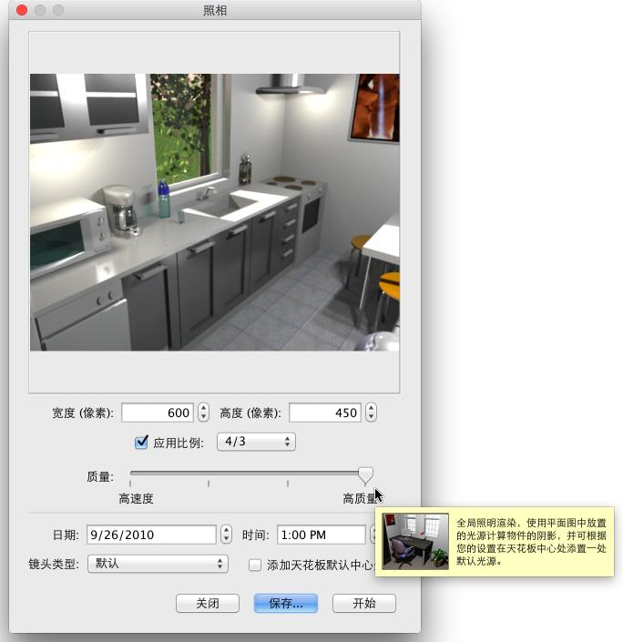
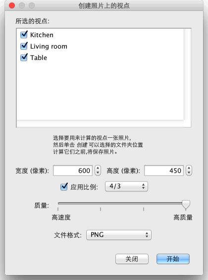

| 产生照片 | |||
建立Sweet Home 3D 图像或照片, 选择 3D 视图→产生照片... 选单项目或点在所选要 产生的照片 工具.
这将展示表现尺寸，质量的下列对话方框,以及尽可能在景象产生期间被设定， 随后 产生 设定按钮去计算渲染景象后并 储存... 按钮让您的照片可以储存所示的照片, 或再一次计算渲染.  若景象尺寸的默认值不能满足您的要求,您也可以选择一种不同宽和高的尺寸，当您 选择 景象的高会自动更新照片的比例宽度,
去满足您所要的照片尺寸，
|
|
|||||||||||||


在二种最好质量质量，渲染图像是依赖灯光的位置和强度，默认值是在每间 房间的天花板中央自动增加灯光，若您要控制好灯光的强弱在您的家， 尽可能不需检查方块中的增加天花板的灯光，增加目录中电灯 的种类于平面图，及调整所提供的灯光强弱只是器，或就藉由编辑或自定义义家具 太阳的光线、颜色，并且指示它的射线点依靠这个季节和被选择的日期，而且还有在这指北针指示，这地理位置和时区上，最后参数是藉由罗盘 对话框的管理，一幅图像的全球亮度也倚赖光的亮度水平去设定在自定义义3D视图或修改的对话框。 最后，这产生照片对话框能让您可以有以下四种不同镜头的选择：
如果您想要计算一组照片在同一个批处理中，存储您想要的视点3D 视图→存储的角度...菜单项，然后选择3D 视图→创建照片在视点...菜单项。它将显示一个对话框，计算之前，会让您选择的大小、 图像质量和计算图像的文件格式，并将其储存在您选择的文件夹中。在两个最佳质量级别，日期/时间和用于给定呈现的角度来看的镜头，将上次您存储或修改这种视点在创建照片窗格中输入的值。如果你永远不会打开创建照片窗格中，或更改该面板中的日期/时间、日期/时间，创建编辑时在家的一天当中的中午。  |


|